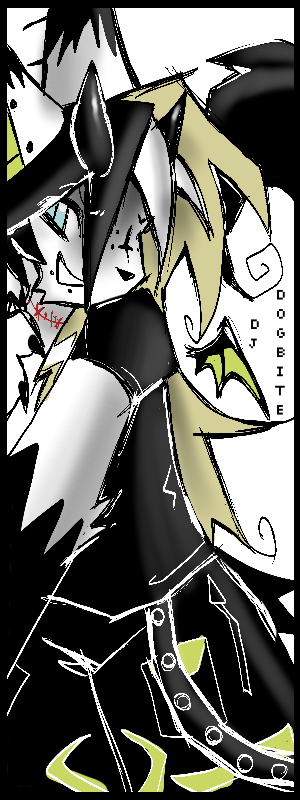
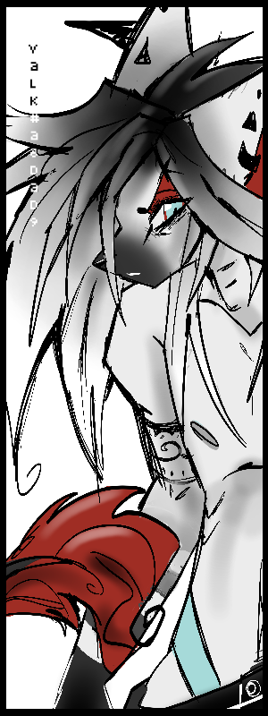

|
 |
dJ DOGBiTE |
|||||||||||
|
Kito is an awkward young adult who's been exploring the music-making sphere for a couple years, and is the main visual artist for BB. In Middle School, he found his love for the classic ear-rumbling brain-tingling gabber kick, and hopes to create the same sensation and magic he discovered as a child.
He lives in the past and fears the future, turning to the internet and fat, loud, bassy gabber kicks to gain fufillment. Hopes to learn how to actually DJ.
valk#a6dad9 |
 |
|||||||||||
|
Valkyria was kidnapped and brought to a lab years ago where he was subject to various experiments in an attempt to create the Perfect Raver. He succeeded in overcoming and murdering his kidnapper and after a few days, found his way out back into society.
His veins are filled with ice-cold liquid sound that leaves a tingling sensation to anyone who touches him. He feeds off of deep, bassy kicks and sparkling arpeggios. Voice has a bitcrushed, tinny element to it as well.